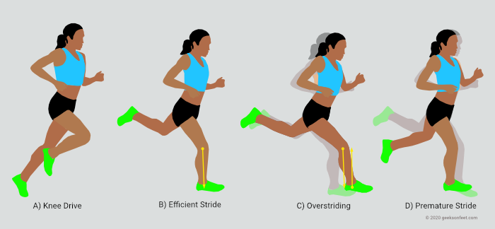

Antara belitung dan berhitung
Anto: "Apa bedanya belitung sama berhitung?"
Siti: "Kalau belitung nama kota, kalau berhitung matematika?"
Anto: "Salah, kalau belitung itu indah, kalau berhitung itu pasrah."
Surong
Ilham: "Jun, kamu tahu gak? adu kerito surong itu ada lagunya lho."
Junaedi: "Gimana lagunya?"
Ilham: "Surong ke kiri, surong ke kanan lalalalala🎵"
Junaedi "Sa ae lo rebusan pletek."
Opini 👀
Menurut saya budaya di Belitong itu sangat menarik. Mengapa menarik? karena banyak upacara adat dan olahraga tradisional yang menarik.
Salah satunya adu kerito surong karena bukan hanya dijadikan lomba tetapi juga dapat berfungsi untuk kehidupan sehari-hari. Karena itu marilah kita menjaga upacara adat dan olahraga tradisional agar dapat lebih dilestarikan untuk waktu yang mendatang.
Salam Redaksi 👋
Halo, apa kabar semua? Semoga semuanya tetap aman dan sehat sehat ya selama masa pandemi ini! Puji Syukur kami panjatkan ke hadirat Tuhan, karena atas penyertaannya kami dapat menerbitkan mading online sekolah yang bernama "Istimewanya Negeri Laskar Pelangi".
Sudah sepatutnya kami bersyukur pada Tuhan karena tanpa-Nya mading ini tak akan bisa dibuat. Kami ucapkan terimakasih pula kepada semua pihak terutama Bapak-Ibu Guru dan juga teman-teman yang telah mendukung selama proses pembuatan mading ini.
Semoga dengan adanya Mading "Istimewanya Negeri Laskar Pelangi ini, kita dapat semakin bangga dan sadar akan pentingnya menjaga dan melestarikan kearifan lokal di masa modern ini.
Masak apa hari ini? 🍳
Hayo..hayo siapa di sini yang suka pedas? Kalau suka yang pedas-pedas, kami ada nih rekomendasi sambal khas belitung yaitu Rusip.
Rusip adalah makanan awetan khas belitung yang berupa sambal. Bentuknya cair dan berwarna coklat keruh. Soal rasa? jangan ditanya, Cita rasa Rusip menyajikan perpaudan 3 rasa, yakni pedas, manis, dan asam. Hanya dengan berbahan dasar fermentasi ikan teri/bilis sudah bisa menggoyang lidah dijamin nampol. Untuk bumbu pelengkapnya mudah lho ada garam, gula aren, cabe, jeruk, dan air kerak nasi. Rusip juga sangat cocok untuk dimakan dengan nasi, lalapan, atau olahan ikan lainnya, pokoknya jawara deh.
Sekilas info nih, dulunya teknik pengawetan ini hanya dilakukan ketika panen ikan melimpah yang membuat harga ikan turun. Tapi seiring berkembangnya jaman Rusip sudah banyak diproduksi dan sekarang menjadi panganan/oleh-oleh khas Belitung.
Nah untuk kalian yang mau nyobain, kamii sudah menyediakan video pembuatan rusip nih. Jadi langsung aja.simak video berikut:
Ayo Mengenal Tarian tradisional! 💃
Setiap daerah pasti memiliki tarian tradisional yang khas akan budaya masing-masing.Salah satu tari tradisional yang terkenal di Belitung adalah Tari Campak. Tari campak termasuk dalam tari kerakyatan, mengingat tari tersebut berkembang di dalam masyarakat pedesaan.
Nama Tari campak sendiri berasal dari seseorang bernama Nek Campak. Beliau membawa tarian campak ini sekitar abad ke-18 melalui pulau Seliu. Seiring berjalannya waktu tarian ini mengalami akulturasi di bagian musik pengiring dan pakaiannya.. Perubahan tersebut terjadi karena pengaruh dari penjajahan Portugis masa itu.
a. Gerakan
Gerakan yang diperagakan dalam tari Campak terlihat lincah, gemulai, dan juga ada gerakan khas dengan mengibaskan sapu tangan mengiringi jari-jemari. Sembari menari ada pula tradisi berbalas pantun yang dilakukan dua pasang penari.
b. Musik Pengiring
Musik pengiring tari Campak biasanya dimainkan menggunakan beberapa alat musik yaitu gendang, gong, biola, akordion, dan keyboard. Penggunaan biola, akordion, dan keyboard sendiri merupakan akulturasi dari Eropa.
c. Ekspresi/Makna Tarian
Ekspresi dari Tarian Campak cenderung menggambarkan kegembiraan dan keceriaan. Maknanya sendiri adalah gambaran keceriaan pergaulan antara muda-mudi dengan berbalas pantun.
d. Busana dan Tata Rias
Sedangkan pakaian yang digunakan memiliki ke khasnya tersendiri antara laki-laki dan perempuan. Perempuan mengenakan baju kurung, gaun panjang, sepatu hak tinggi ala perempuan Eropa. Lalu laki-laki mengenakan pakaian Teluk Belanga, bercelana panjang, kemeja, selendang. Lalu untuk tata rias, Perempuan biasa menggunakan riasan lengkap dan juga menggunakan topi dan atribut disekitar topi. Untuk laki-laki hanya sekadar memakai peci, namun ada juga yang menggunakan topi khas melayu.
Berikut Cuplikan video Tari Campak:
Olahraga dulu yuk 🤸
Setiap daerah pasti memiliki olahraga ataupun permainan tradisional yang khas. Tak terkecuali Negeri Laskar Pelangi yang memiliki permainan tradisional Adu Kerito Surong. Adu Kerito Surong adalah permainan tradisional asal Belitong bersifat rekreatif dan mengutamakan kecepatan, ketangkasan, dan juga keseimbangan.
Awalnya Kerito Surong dijadikan sebagai penampung hasil panen, namun karena kegirangan akan hasil panen melimpah beberapa penduduk ada yang langsung menaiki kerito suro setelah selesai panen. Maknanya sendiri adalah untuk mencerminkan kegembiraaan mereka akan hasil panen yang melimpah. Dari situlah olahraga yang dikenal adu kerito surong ini akhirnya tercipta.
Sarana yang digunakan yakni Kerito Surong, Tali plastik, gerunggang, Roda kayu, Suyak (keranjang anyaman rotan atau bambu yang dulu untuk tempat panen lada.), Bidai Kayu Jembatan Bambu atau Kayu yang berasal dari kayu, Ulo-Ulo, Kayu Pentungan (kayu estafet)
Cara Bermain
1. Bentuk 2 kelompok yang beranggotakan 2 orang, orang pertama berlagak menjadi hasil panen, orang kedua sebagai pengemudi.
2. Tentukan wasit.
3. Wasit yang terpilih mengundi rintangan yang disediakan sekaligus menjelaskan aturan main.
4. Setelah kedua tim sepakat, kedua tim bisa langsung mengambil posisi yang sudah disediakan .
5. Kedua tim akan saling beradu kecepatan dengan rintangan yang telah disepakati, sembari mengambil tongkat estafet yang sudah dipasang di beberapa rintangan.
6. Tim/kelompok yang paling banyak mengumpulkan tongkat estafet dengan waktu tercepat yang menjadi pemenang.
Kekuatan: Karena dibutuhkan kekuatan untuk mengangkat gerobak dan orang yang menjadi beban penyeimbang.
Kelenturan: Karena dalam permainan adu kerito surong tidak dibutuhkan kelenturan saat mendorong ataupun menjadi beban penyeimbang.
Tips melatih komponen kekuatan dan keseimbangan:
1.Kekuatan:
a.Squat, Untuk menguatkan kaki saat mengangkat beban berat
b.Push up, Menguatkan tangan untuk mengangkat gerobak yang berat
c.Plank, Untuk menguatkan otot perut untuk menahan beban yg berat
2. Keseimbangan:
a.Melakukannya latihan berulang ulang dengan gerobak seakan-akan melakukan permainan kerito sarong, tapi tanpa beban di jembatan kayu ataupun untuk membiasakan diri agar seimbang.
b.Berdiri dengan satu kaki, Untuk mengontrol badan agar menjaga keseimbangan
c.Squat jump, untuk menguatkan otot kaki agar dapatmenjaga keseimbangan
3. Kecepatan:

a.Squat jumps, untuk melatih tubuh semakin lincah dan gesit dalam mendorong gerobak.
b.Lunges, untuk meningkatkan pergerakan sendi di pergelangan kaki, lutut, dan sendi, agar kuat mendorong gerobak.
c.Run stride, untuk mengoptimalkan kecepatan sehingga tubuh dapat melaju dengan lebih cepat saat mendorong gerobak
Pantun
Menari campak berbalas pantun
pantunnya indah menghibur semua
barangsiapa belajar tekun
maka hasil kan tiba sendirinya
Tutup mata karena tak tampak
Meraba raba karena tak jelas
Ayo kawan menari campak
Biar menjadi generasi cerdas


 Gerakan yang diperagakan dalam tari Campak terlihat lincah, gemulai, dan juga ada gerakan khas dengan mengibaskan sapu tangan mengiringi jari-jemari. Sembari menari ada pula tradisi berbalas pantun yang dilakukan dua pasang penari.
Gerakan yang diperagakan dalam tari Campak terlihat lincah, gemulai, dan juga ada gerakan khas dengan mengibaskan sapu tangan mengiringi jari-jemari. Sembari menari ada pula tradisi berbalas pantun yang dilakukan dua pasang penari.  Musik pengiring tari Campak biasanya dimainkan menggunakan beberapa alat musik yaitu gendang, gong, biola, akordion, dan keyboard. Penggunaan biola, akordion, dan keyboard sendiri merupakan akulturasi dari Eropa.
Musik pengiring tari Campak biasanya dimainkan menggunakan beberapa alat musik yaitu gendang, gong, biola, akordion, dan keyboard. Penggunaan biola, akordion, dan keyboard sendiri merupakan akulturasi dari Eropa. 
 Sedangkan pakaian yang digunakan memiliki ke khasnya tersendiri antara laki-laki dan perempuan. Perempuan mengenakan baju kurung, gaun panjang, sepatu hak tinggi ala perempuan Eropa. Lalu laki-laki mengenakan pakaian Teluk Belanga, bercelana panjang, kemeja, selendang. Lalu untuk tata rias, Perempuan biasa menggunakan riasan lengkap dan juga menggunakan topi dan atribut disekitar topi. Untuk laki-laki hanya sekadar memakai peci, namun ada juga yang menggunakan topi khas melayu.
Sedangkan pakaian yang digunakan memiliki ke khasnya tersendiri antara laki-laki dan perempuan. Perempuan mengenakan baju kurung, gaun panjang, sepatu hak tinggi ala perempuan Eropa. Lalu laki-laki mengenakan pakaian Teluk Belanga, bercelana panjang, kemeja, selendang. Lalu untuk tata rias, Perempuan biasa menggunakan riasan lengkap dan juga menggunakan topi dan atribut disekitar topi. Untuk laki-laki hanya sekadar memakai peci, namun ada juga yang menggunakan topi khas melayu. 
 a.Squat, Untuk menguatkan kaki saat mengangkat beban berat
a.Squat, Untuk menguatkan kaki saat mengangkat beban berat  a.Melakukannya latihan berulang ulang dengan gerobak seakan-akan melakukan permainan kerito sarong, tapi tanpa beban di jembatan kayu ataupun untuk membiasakan diri agar seimbang.
a.Melakukannya latihan berulang ulang dengan gerobak seakan-akan melakukan permainan kerito sarong, tapi tanpa beban di jembatan kayu ataupun untuk membiasakan diri agar seimbang.